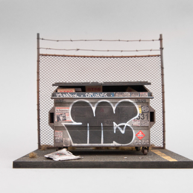

JOSHUA SMITH

Muriel Guépin Gallery is pleased to present “New Realities”, a group show featuring three young artists all using different mediums but all starting their artistic process with existing images. Appropriation has become an everyday phenomenon in our society with the arousal of what has sometimes been called “ The Remix Generation” which has taken form in all types of the art. Juan Arana draws portraits of characters found in old images dating from as early as the 18th century often juxtaposing them with well-know cartoon characters to play with the notion of time and meld imagination with reality. Laurent Chéhère merges those two worlds as well by creating imaginary houses floating in the sky, pasting hundreds of images of old buildings he photographed in Paris, France into Photoshop. Joshua Smith is also inspired by images of urban architecture. He reproduces miniature sculptures of existing houses, playing with scale and literally shrinking the whole world into the palm of ones’ hand.
Juan Carlos Arana is an American artist who is inspired by people. Over the years, his work has evolved from personal storytelling through silhouette paintings to the reanimation of real people lost in time. JCA’s artistic evolution can be linked to his own story. His exploration of his own memories created a desire to explore the lives of forgotten people and eras to bring them back to our present life. His graphite drawings are hyper realistic and when rendered in black and white mimic a very distinct historical look. The images he selects and the way he chooses to render them gives his work a very nostalgic and historical essence. In some of his pieces, well know cartoon characters drawn in colored pencil are paired with older images in black and white, thereby confusing timelines and creating whimsical stories.
French photographer Laurent Chehère makes images of flying houses and other dwellings that are informed by his wanderings in the hidden neighborhoods of Paris. The charming manipulated images, part digital, part analog depict a dreamlike world where his reconstructed houses appear to be floating in the sky. Hundreds of details of photographed buildings are carefully assembled into Photoshop to create whimsical photomontages that all pay a tribute to Parisian architecture, culture and lifestyle. Most of his imaginary flying houses are inspired by his love of cinematic history and old Parisian stories, with several titles taken from classic movies such as “The Red Balloon” to name just one.
Joshua Smith is an Australian artist whose sculptures are all miniatures of urban houses and scenes from big cities like Sydney, Los Angeles, and Hong Kong that he has become enthralled with. Everything down to the graffiti on the walls, the lights within the houses, and the newspapers or cigarette butts found on the streets are recreated in immense detail, but at a fraction of the size. The attention to detail and the patience he needs to reconstruct his urban scenery make him both a storyteller and an archeologist of the present time. He plays with scale to create intrigue, as now the viewer is larger than the buildings they are used to walking into. By this sly role reversal the viewer ends up questioning their own reality, and imagining what it’s like to be a giant.
This exhibition will be on view until April 1, 2017.